This function can be used to automatically select the hyper-parameters (amount of sparsity for sgcca or shrinkage parameters for RGCCA). A permutation-based strategy very similar to the one proposed in (Witten et al, 2009) is implemented.
Usage
rgcca_permutation(
blocks,
par_type = "tau",
par_value = NULL,
par_length = 10,
n_perms = 20,
n_cores = 1,
quiet = TRUE,
scale = TRUE,
scale_block = TRUE,
method = "rgcca",
connection = NULL,
scheme = "factorial",
ncomp = 1,
tau = 1,
sparsity = 1,
init = "svd",
bias = TRUE,
tol = 1e-08,
response = NULL,
superblock = FALSE,
NA_method = "na.ignore",
rgcca_res = NULL,
verbose = TRUE,
n_iter_max = 1000,
comp_orth = TRUE
)Arguments
- blocks
A list that contains the \(J\) blocks of variables \(\mathbf{X_1}, \mathbf{X_2}, ..., \mathbf{X_J}\). Block \(\mathbf{X}_j\) is a matrix of dimension \(n \times p_j\) where \(n\) is the number of observations and \(p_j\) the number of variables.
- par_type
A character giving the parameter to tune among "sparsity", "tau" or "ncomp".
- par_value
The parameter values to be tested, either NULL, a numerical vector of size \(J\), or a matrix of size \(\text{par_length} \times J\).
If par_value is NULL, up to par_length sets of parameters are generated uniformly from the minimum and maximum possible values of the parameter defined by par_type for each block. Minimum possible values are 0 for tau, \(1/\text{sqrt}(p_j)\) for sparsity, and 1 for ncomp. Maximum possible values are 1 for tau and sparsity, and \(p_j\) for ncomp.
If par_value is a vector, it overwrites the maximum values taken for the range of generated parameters.
If par_value is a matrix, par_value directly corresponds to the set of tested parameters.
- par_length
An integer indicating the number of sets of candidate parameters to be tested (if par_value is not a matrix).
- n_perms
The number of permutations for each set of parameters (default is 20).
- n_cores
The number of cores used for parallelization.
- quiet
A logical value indicating if some diagnostic messages are reported.
- scale
A logical value indicating if variables are standardized.
- scale_block
A logical value or a string indicating if each block is scaled.
If TRUE or "inertia", each block is divided by the sum of eigenvalues of its empirical covariance matrix.
If "lambda1", each block is divided by the square root of the highest eigenvalue of its empirical covariance matrix.
If standardization is applied (scale = TRUE), the block scaling applies on the standardized blocks.
- method
A string specifying which multiblock component method to consider. Possible values are found using available_methods.
- connection
A (\(J \times J\)) symmetric matrix describing the network of connections between blocks (default value: 1-diag(J)).
- scheme
A string or a function specifying the scheme function applied to covariance maximization among "horst" (the identity function), "factorial" (the square function - default value), "centroid" (the absolute value function). The scheme function can be any continously differentiable convex function and it is possible to design explicitely the scheme function (e.g. function(x) x^4) as argument of the function. See (Tenenhaus et al, 2017) for details.
- ncomp
A numerical value or a vector of length \(J\) indicating the number of components per block. If a single value is provided, the same number of components is extracted for every block.
- tau
Either a numerical value, a numeric vector of size \(J\), or a numeric matrix of dimension \(\mathrm{max}(\text{ncomp}) \times J\) containing the values of the regularization parameters (default: tau = 1, for each block and each dimension), or a string equal to "optimal". The regularization parameters varies from 0 (maximizing the correlation) to 1 (maximizing the covariance).
If tau is a numerical value, tau is identical accross all constraints applied to all block weight vectors.
If tau is a vector, tau[j] is used for the constraints applied to all the block weight vectors associated to block \(\mathbf X_j\).
If tau is a matrix, tau[k, j] is associated with the constraints applied to the kth block weight vector correpsonding to block \(\mathbf X_j\).
If tau = "optimal" the regularization parameters are estimated for each block and each dimension using the Schafer and Strimmer (2005) analytical formula. The tau parameters can also be estimated using rgcca_permutation or rgcca_cv.
- sparsity
Either a numerical value, a numeric vector of size \(J\) or a numeric matrix of dimension \(\text{max}(\text{ncomp}) \times J\) encoding the L1 constraints applied to the block weight vectors. For block \(j\), the amount of sparsity varies between \(1/\text{sqrt}(p_j)\) and 1 (larger values of sparsity correspond to less penalization).
If sparsity is a numerical value, then sparsity is identical accross all constraints applied to all block weight vectors.
If sparsity is a vector, sparsity[j] is identical across the constraints applied to the block weight vectors associated to block \(\mathbf X_j\): $$\forall k, \Vert a_{j,k} \Vert_{1} \le \text{sparsity}[j] \sqrt{p_j}.$$
If sparsity is a matrix, sparsity[k, j] is associated with the constraints applied to the kth block weight vector correpsonding to block \(\mathbf X_j\): $$\Vert a_{j,k}\Vert_{1} \le \text{sparsity}[k,j] \sqrt{p_j}.$$
The sparsity parameter can be estimated by using rgcca_permutation or rgcca_cv.
- init
A string giving the type of initialization to use in the RGCCA algorithm. It could be either by Singular Value Decompostion ("svd") or by random initialisation ("random") (default: "svd").
- bias
A logical value for biaised (\(1/n\)) or unbiaised (\(1/(n-1)\)) estimator of the variance/covariance (default: bias = TRUE).
- tol
The stopping value for the convergence of the algorithm (default: tol = 1e-08).
- response
A numerical value giving the position of the response block. When the response argument is filled, the supervised mode is automatically activated.
- superblock
A logical value indicating if the superblock option is used.
- NA_method
A string indicating the method used for handling missing values ("na.ignore", "na.omit"). (default: "na.ignore").
"na.omit"corresponds to perform RGCCA on the fully observed observations (observations from which missing values have been removed)."na.ignore"corresponds to perform RGCCA algorithm on available data (See Tenenhaus et al, 2005).
- rgcca_res
A fitted RGCCA object (see
rgcca).- verbose
A logical value indicating if the progress of the permutation procedure is reported.
- n_iter_max
Integer giving the algorithm's maximum number of iterations.
- comp_orth
A logical value indicating if the deflation should lead to orthogonal block components or orthogonal block weight vectors.
Value
A permutation object that can be printed and plotted.
- opt
A list indicating some options of the RGCCA model used during the permutation.
- call
A list containing the input parameters of the RGCCA model.
- par_type
The type of parameter tuned (either "tau", "sparsity", or "ncomp").
- n_perms
The number of permutations for each set of candidate tuning paramaters.
- best_params
The set of tuning parameters that yields the highest Z-statistic.
- permcrit
A matrix of permuted S/RGCCA criteria. The ith row of permcrit contains the n_perms values of S/RGCCA permuted criteria obtained for the ith set of tuning parameters.
- params
A matrix reporting the sets of candidate parameters used during the permutation process.
- stats
A data.frame containing in columns: the sets of candidate parameters, the corresponding non permuted criteria, means and standard deviations of permuted criteria, Z-statistics and p-values.
Details
The tuning parameters are selected using the permutation scheme proposed in (Witten et al, 2009). For each candidate tuning parameter value, the following is performed:
(1) Repeat the following n_perms times (for n_perms large): (a) Randomly permuted the rows of \(X_1\),..., \(X_J\)
to create new blocks: \(X_1^*\),..., \(X_J^*\). (b) Run S/RGCCA on the permuted blocks \(X_1^*\),...,
\(X_J^*\). (c) Record the S/RGCCA criterion \(t^*\).
(2) Run S/RGCCA on the original blocks \(X_1\),..., \(X_J\).
(3) Record the S/RGCCA criterion \(t\).
(4) The resulting p-value is given by \(\text{mean}(t^* > t)\); that is, the fraction of \(t^*\) that exceeds the value of \(t\) obtained from the real data.
Then, choose the tuning parameter values that gives the smallest value in Step 4.
References
Witten, D. M., Tibshirani, R., & Hastie, T. (2009). A penalized matrix decomposition, with applications to sparse principal components and canonical correlation analysis. Biostatistics, 10(3), 515-534.
Examples
####################################
# Permutation based strategy for #
# determining the best shrinkage #
# parameters (par_type = "tau") #
####################################
data(Russett)
blocks <- list(
agriculture = Russett[, seq(3)],
industry = Russett[, 4:5],
politic = Russett[, 6:11]
)
C <- matrix(c(
0, 0, 1,
0, 0, 1,
1, 1, 0
), 3, 3)
# default value: 10 vectors from rep(0, length(blocks))
# to rep(1, length(blocks)), uniformly distributed.
fit <- rgcca_permutation(blocks,
connection = C,
par_type = "tau",
par_length = 10, n_perms = 2,
n_cores = 1
)
#>
| | 0 % ~calculating
|++ | 3 % ~00s
|++++ | 7 % ~00s
|+++++ | 10% ~00s
|+++++++ | 13% ~00s
|+++++++++ | 17% ~00s
|++++++++++ | 20% ~00s
|++++++++++++ | 23% ~00s
|++++++++++++++ | 27% ~00s
|+++++++++++++++ | 30% ~00s
|+++++++++++++++++ | 33% ~00s
|+++++++++++++++++++ | 37% ~00s
|++++++++++++++++++++ | 40% ~00s
|++++++++++++++++++++++ | 43% ~00s
|++++++++++++++++++++++++ | 47% ~00s
|+++++++++++++++++++++++++ | 50% ~00s
|+++++++++++++++++++++++++++ | 53% ~00s
|+++++++++++++++++++++++++++++ | 57% ~00s
|++++++++++++++++++++++++++++++ | 60% ~00s
|++++++++++++++++++++++++++++++++ | 63% ~00s
|++++++++++++++++++++++++++++++++++ | 67% ~00s
|+++++++++++++++++++++++++++++++++++ | 70% ~00s
|+++++++++++++++++++++++++++++++++++++ | 73% ~00s
|+++++++++++++++++++++++++++++++++++++++ | 77% ~00s
|++++++++++++++++++++++++++++++++++++++++ | 80% ~00s
|++++++++++++++++++++++++++++++++++++++++++ | 83% ~00s
|++++++++++++++++++++++++++++++++++++++++++++ | 87% ~00s
|+++++++++++++++++++++++++++++++++++++++++++++ | 90% ~00s
|+++++++++++++++++++++++++++++++++++++++++++++++ | 93% ~00s
|+++++++++++++++++++++++++++++++++++++++++++++++++ | 97% ~00s
|++++++++++++++++++++++++++++++++++++++++++++++++++| 100% elapsed=00s
print(fit)
#> Call: method='rgcca', superblock=FALSE, scale=TRUE, scale_block=TRUE, init='svd',
#> bias=TRUE, tol=1e-08, NA_method='na.ignore', ncomp=c(1,1,1), response=NULL,
#> comp_orth=TRUE
#> There are J = 3 blocks.
#> The design matrix is:
#> agriculture industry politic
#> agriculture 0 0 1
#> industry 0 0 1
#> politic 1 1 0
#>
#> The factorial scheme is used.
#>
#> Tuning parameters (tau) used:
#> agriculture industry politic
#> 1 1.000 1.000 1.000
#> 2 0.889 0.889 0.889
#> 3 0.778 0.778 0.778
#> 4 0.667 0.667 0.667
#> 5 0.556 0.556 0.556
#> 6 0.444 0.444 0.444
#> 7 0.333 0.333 0.333
#> 8 0.222 0.222 0.222
#> 9 0.111 0.111 0.111
#> 10 0.000 0.000 0.000
#>
#> Tuning parameters Criterion Permuted criterion sd zstat p-value
#> 1 1.00/1.00/1.00 0.590 0.0380 0.0233 23.70 0
#> 2 0.89/0.89/0.89 0.639 0.0429 0.0264 22.58 0
#> 3 0.78/0.78/0.78 0.694 0.0489 0.0303 21.34 0
#> 4 0.67/0.67/0.67 0.760 0.0567 0.0352 19.94 0
#> 5 0.56/0.56/0.56 0.837 0.0672 0.0419 18.36 0
#> 6 0.44/0.44/0.44 0.930 0.0818 0.0512 16.56 0
#> 7 0.33/0.33/0.33 1.045 0.1039 0.0649 14.49 0
#> 8 0.22/0.22/0.22 1.192 0.1408 0.0872 12.06 0
#> 9 0.11/0.11/0.11 1.399 0.2145 0.1295 9.15 0
#> 10 0.00/0.00/0.00 1.934 0.4740 0.2594 5.63 0
#> The best combination is: 1.00/1.00/1.00 for a z score of 23.7 and a p-value of 0.
plot(fit)

fit$best_params
#> agriculture industry politic
#> 1 1 1
if (FALSE) {
# It is possible to define explicitly K combinations of shrinkage
# parameters to be tested and in that case a matrix of dimension KxJ is
# required. Each row of this matrix corresponds to one specific set of
# shrinkage parameters.
par_value <- matrix(c(
0, 0, 0,
1, 1, 0,
0.5, 0.5, 0.5,
sapply(blocks, RGCCA:::tau.estimate),
1, 1, 1
), 5, 3, byrow = TRUE)
perm.out <- rgcca_permutation(blocks,
connection = C,
par_type = "tau",
par_value = par_value,
n_perms = 5, n_cores = 1
)
print(perm.out)
plot(perm.out)
# with superblock
perm.out <- rgcca_permutation(blocks,
par_type = "tau",
superblock = TRUE,
scale = TRUE, scale_block = FALSE,
n_perms = 5, n_cores = 1
)
print(perm.out)
plot(perm.out)
# used a fitted rgcca_permutation object as input of the rgcca function
fit.rgcca <- rgcca(perm.out)
print(fit.rgcca)
######################################
# Permutation based strategy for #
# determining the best sparsity #
# parameters (par_type = "sparsity") #
######################################
# defaut value: 10 vectors from minimum values
# (1/sqrt(ncol(X1)), ..., 1/sqrt(ncol(XJ))
# to rep(1, J), uniformly distributed.
perm.out <- rgcca_permutation(blocks,
par_type = "sparsity",
n_perms = 50, n_cores = 1
)
print(perm.out)
plot(perm.out)
perm.out$best_params
# when par_value is a vector of length J. Each element of the vector
# indicates the maximum value of sparsity to be considered for each block.
# par_length (default value = 10) vectors from minimum values
# (1/sqrt(ncol(X1)), ..., 1/sqrt(ncol(XJ)) to maximum values, uniformly
# distributed, are then considered.
perm.out <- rgcca_permutation(blocks,
connection = C,
par_type = "sparsity",
par_value = c(0.6, 0.75, 0.5),
par_length = 7, n_perms = 20,
n_cores = 1, tol = 1e-3
)
print(perm.out)
plot(perm.out)
perm.out$best_params
# when par_value is a scalar, the same maximum value is applied
# for each block
perm.out <- rgcca_permutation(blocks,
connection = C,
par_type = "sparsity",
par_value = 0.8, par_length = 5,
n_perms = 10, n_cores = 1
)
perm.out$params
######################################
# Speed up the permutation procedure #
######################################
# The rgcca_permutation function can be quite time-consuming. Since
# approximate estimates of the block weight vectors are acceptable in this
# case, it is possible to reduce the value of the tolerance (tol argument)
# of the RGCCA algorithm to speed up the permutation procedure.
#
data("ge_cgh_locIGR", package = "gliomaData")
A <- ge_cgh_locIGR$multiblocks
Loc <- factor(ge_cgh_locIGR$y)
levels(Loc) <- colnames(ge_cgh_locIGR$multiblocks$y)
A[[3]] <- A[[3]][, -3]
C <- matrix(c(0, 0, 1, 0, 0, 1, 1, 1, 0), 3, 3)
# check dimensions of the blocks
sapply(A, dim)
par_value <- matrix(c(
seq(0.1, 1, by = 0.1),
seq(0.1, 1, by = 0.1),
rep(0, 10)
), 10, 3, byrow = FALSE)
fit <- rgcca_permutation(A,
connection = C,
par_type = "tau",
par_value = par_value,
par_length = 10,
n_perms = 10, n_cores = 1, tol = 1e-2
)
print(fit)
plot(fit)
}